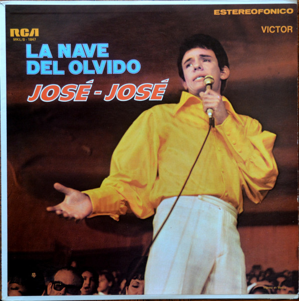
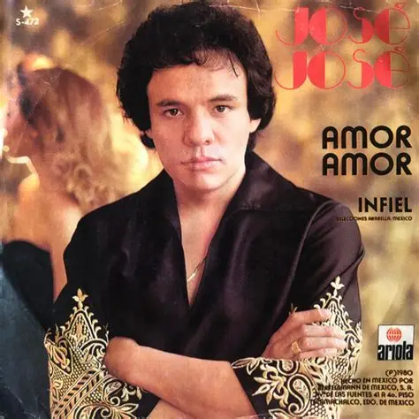
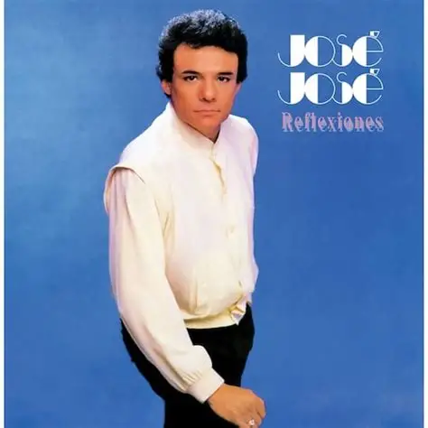

Discografía de José José
La Nave del Olvido (1970)
- Año de lanzamiento y contexto: Fue lanzado a principios de 1970, después de que José José grabara el tema homónimo del compositor argentino Dino Ramos.
- Ventas: Fue un éxito rotundo en ventas, posicionando al cantante en el radar como una gran promesa musical.
- Logros o premios: El sencillo principal alcanzó el número uno en las listas de popularidad de países como Argentina, Colombia, Chile y México.
- Representación en su carrera: Significó su primer gran éxito comercial en México y América Latina, lanzando formalmente su carrera hacia un público masivo antes de su histórica participación en el Festival OTI.
- Canciones destacadas: "La nave del olvido", "Del altar a la tumba" y "Ella es así".

El Triste (1970)
- Año de lanzamiento y contexto: Lanzado en 1970, fue su tercer álbum de estudio y se publicó como seguimiento al impacto masivo de su participación en el II Festival de la Canción Latina.
- Ventas: Gracias al éxito del álbum, recibió el disco de oro en Hollywood en abril de ese mismo año.
- Logros o premios: Contiene la canción "El Triste", con la que obtuvo el tercer lugar en el festival; sin embargo, su interpretación generó una ovación histórica que lo consagró mundialmente.
- Representación en su carrera: Fue el disco que lo catapultó al estrellato internacional, siendo su actuación de "El Triste" considerada una obra de arte y el momento más icónico de su técnica vocal.
- Canciones destacadas: "El Triste", "Dos", "La noche de los dos", "Amor de discoteca" y "Alguien que te extraña".

Amor, Amor (1980)
- Año de lanzamiento y contexto: Publicado en 1980, fue uno de sus primeros grandes éxitos de la década tras su consolidación con la discográfica Ariola Records.
- Ventas: Consiguió ventas por más de un millón y medio de copias.
- Logros o premios: Sus ventas y popularidad contribuyeron a que fuera considerado el artista número uno de México durante esos años.
- Representación en su carrera: Representó el inicio de su etapa de estrellato internacional definitivo durante la década de los 80.
- Canciones destacadas: "Amor, Amor" e "Insaciable amante".

Secretos (1983)
- Año de lanzamiento y contexto: Fue lanzado en 1983; José José viajó a España para grabar esta producción bajo la autoría y producción del compositor Manuel Alejandro.
- Ventas: Vendió 4 millones de copias en su primer año de lanzamiento. Con el tiempo, las cifras totales superaron los 11 millones de copias, convirtiéndose en el disco más vendido de su historia.
- Logros o premios: Recibió una nominación al premio Grammy como Mejor Álbum de Pop Latino en 1985. Es el álbum grabado más exitoso de toda su carrera.
- Representación en su carrera: Marcó el punto más alto de su esplendor profesional y comercial, consolidándolo como la figura número uno de la música romántica.
- Canciones destacadas: "Lo dudo", "El amor acaba", "Voy a llenarte toda", "He renunciado a ti" y "Cuando vayas conmigo".
Reflexiones (1984)
- Año de lanzamiento y contexto: Lanzado en 1984, fue un álbum escrito, producido y arreglado por el compositor español Rafael Pérez Botija.
- Ventas: Logró vender más de 2 millones de copias en todo el mundo.
- Logros o premios: Fue el primer álbum en alcanzar el número uno en la lista Billboard Latin Pop Albums en Estados Unidos tras la creación de dicho listado en 1985. También recibió una nominación al Grammy por Mejor Actuación de Pop Latino en 1986.
- Representación en su carrera: Continuó con el éxito internacional masivo tras el fenómeno de Secretos, manteniendo su hegemonía en las listas de popularidad de Estados Unidos.
- Canciones destacadas: "Payaso" y "¿Y qué?".

Promesas (1985)
- Año de lanzamiento y contexto: Lanzado en 1985, contó nuevamente con la producción y composiciones de Rafael Pérez Botija.
- Ventas: El álbum alcanzó rápidamente los primeros lugares de popularidad, logrando ser un éxito masivo en ventas en América Latina.
- Logros o premios: Se convirtió en su segundo álbum número uno en la lista Billboard Latin Pop Albums. El tema "Pruébame" fue nominado al Grammy como Mejor Actuación de Pop Latino en 1987.
- Representación en su carrera: Reafirmó su dominio en el mercado latino de Estados Unidos y consolidó su relación creativa con Pérez Botija como uno de sus productores clave.
- Canciones destacadas: "Amantes", "Me vas a echar de menos", "Más", "Tú me estás volviendo loco" y "Pruébame".